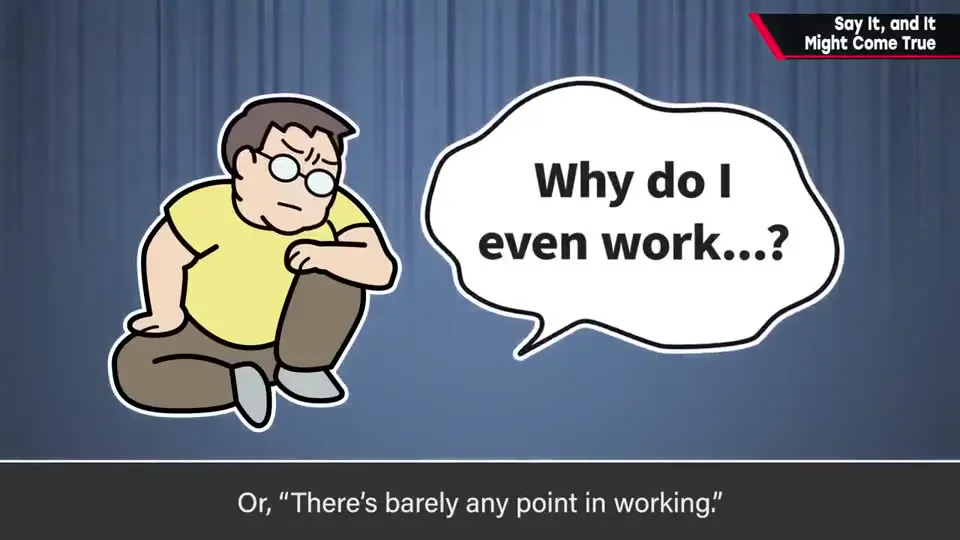
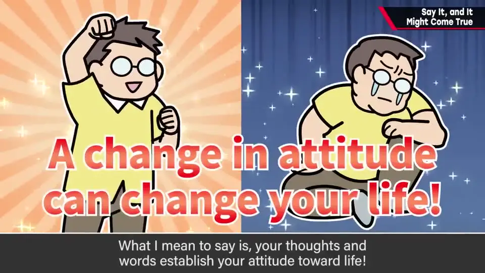
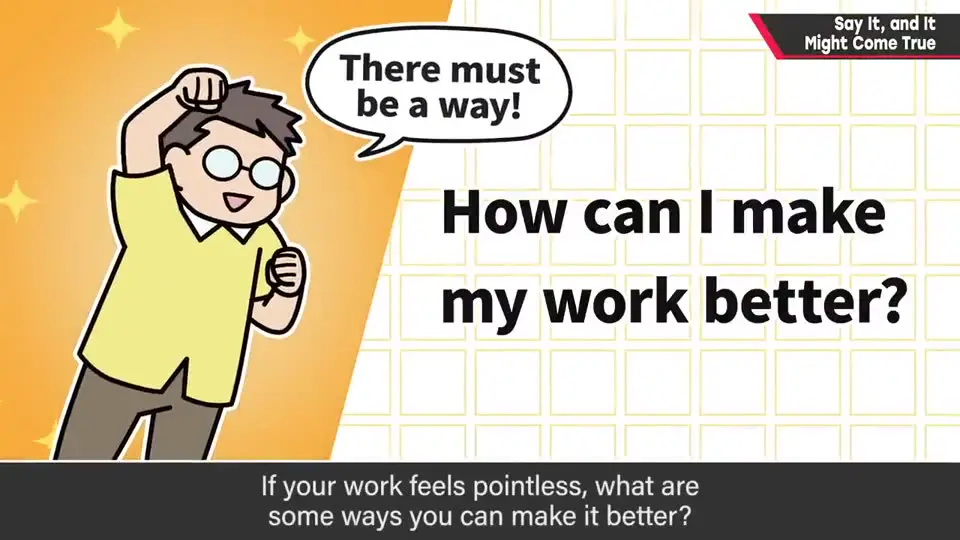
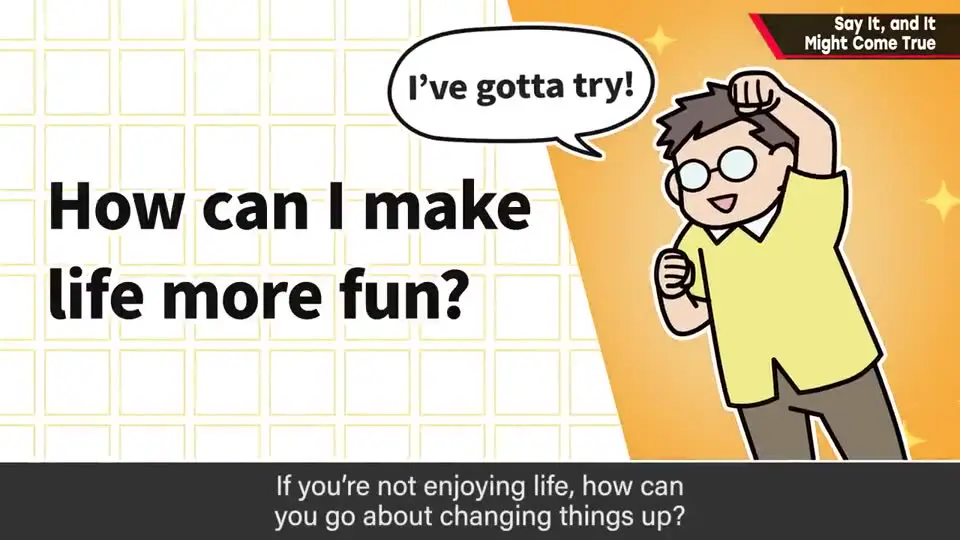
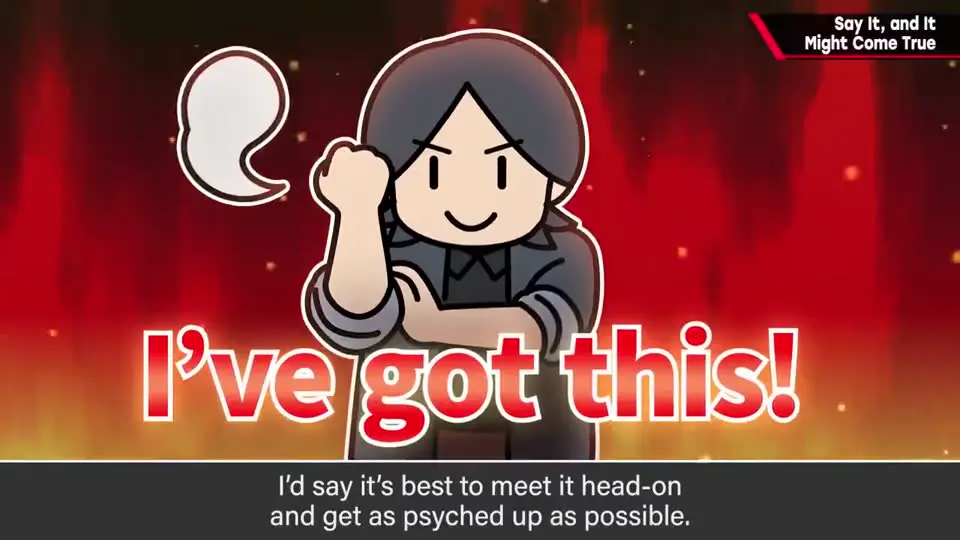

速览
不要小看语言的力量：说出口的事，往往会朝那个方向发展。当然，说「明天一定下雨」「我能当奥运选手」没有意义；但如果经常把「钱越来越少」「工作没意义」「每天都没意思」挂在嘴边、发到 SNS，樱井认为现实也会变成那样。不过他的重点不是玄学式的转运，而是：说过、想过的话会塑造你自己的姿态。负面想法也没问题——把它转成「怎样把工作做得更好」「怎样让每天更有趣」这种有具体方向的燃料，反而效果更好。你会朝自己说出的方向滚动；和之前「暗示的力量」一样：动起来的人赢。
1. 不要小看语言的力量 0:03
说出口的事，会朝那个方向发展。当然，说「明天一定下雨」「我能当奥运选手」是没意义的。
但假如你经常想、尤其是说出口或发到 SNS上：
- 「钱越来越少」
- 「工作也没什么意义」
- 「每天都没意思」
樱井认为现实真的会变成那样。反过来，说积极的话（「好像要赚大钱了」「工作干劲十足」「每天真开心」），运气也许就会转好。

2. 不是玄学：话语塑造你的姿态 0:57

樱井自己吐槽：这样讲太可疑了，像运势一样讲会显得很玄。
他真正想说的是：说过的话、想过的事，会塑造自己的姿态。它看不见、效果也不明显，所以才更不能小看。
3. 负面想法也可以：把它变成燃料 1:27
这不是「我们要积极向上」的说教。负面想法并不坏，甚至可以有；某种意义上，负面比单纯积极更可能带来主动性——只要你把它带向「要改善它」的心情，效果反而更好。


flowchart LR
N1["「工作没意义」"] --> P1["怎样才能把工作做得更好？"]
N2["「每天没意思」"] --> P2["能不能做点更不一样的事？"]
P1 --> F["有具体方向的燃料"]
P2 --> F
F --> G["朝自己说出的方向滚动"]
4. 你会朝自己说出的方向滚动 2:07
- 人会朝自己说出的方向滚动。投入某件事时，用「我还能更行！」给自己打气也不错。
- 这和之前「暗示的力量」一期相通：动起来的人赢，做了的人赢。
- 哪怕只是嘴上说「去做！」，也会朝某个前进的方向动起来。

自测题
1. 樱井说「说出口就可能成真」，他真正的意思是转运之类的玄学吗？
不是。他说那样讲会像玄学；真正想说的是：说过、想过的话会塑造自己的姿态（态度），看不见效果所以更不能小看。 1:13
2. 樱井如何看待负面想法？
负面想法并不坏，可以有。如果把它转成「要改善」的心情，例如「工作没意义→怎样把工作做得更好」「每天没意思→能不能做点不一样的事」，它会成为有具体方向的燃料，反而更有效。 1:27
3. 本期与哪一期的话题相通？结论是什么？
与之前「暗示的力量」（A-16）相通：动起来的人赢。哪怕只是嘴上说「去做！」，也会朝前进的方向动起来。 2:20